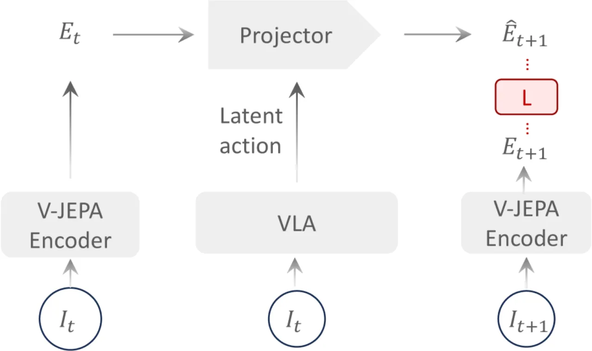
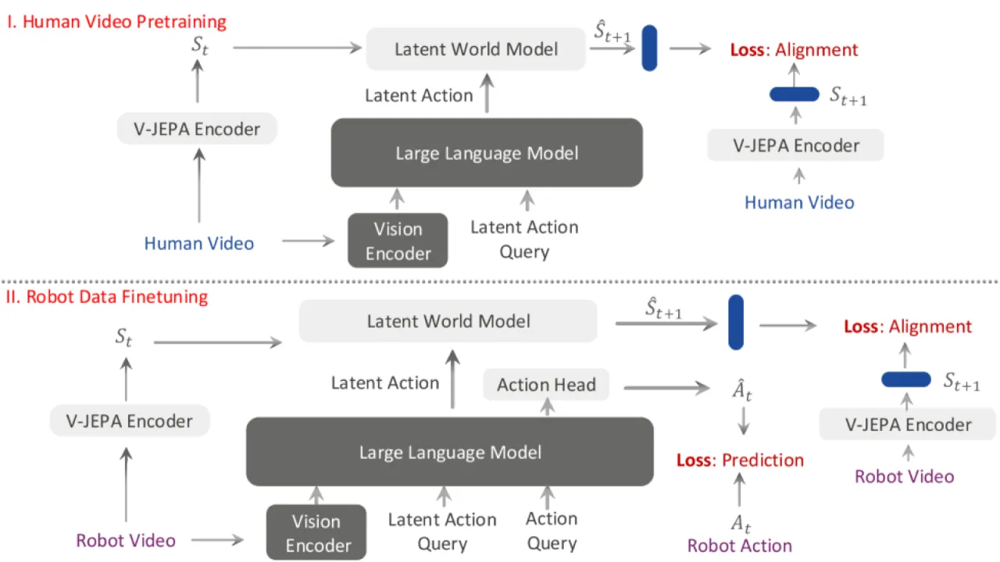
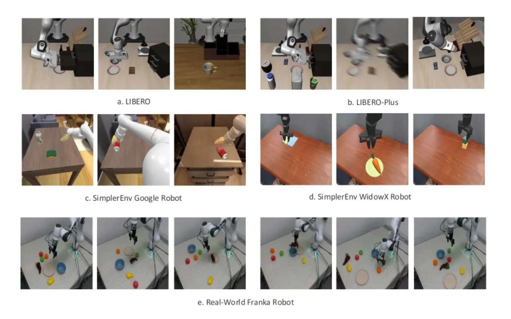
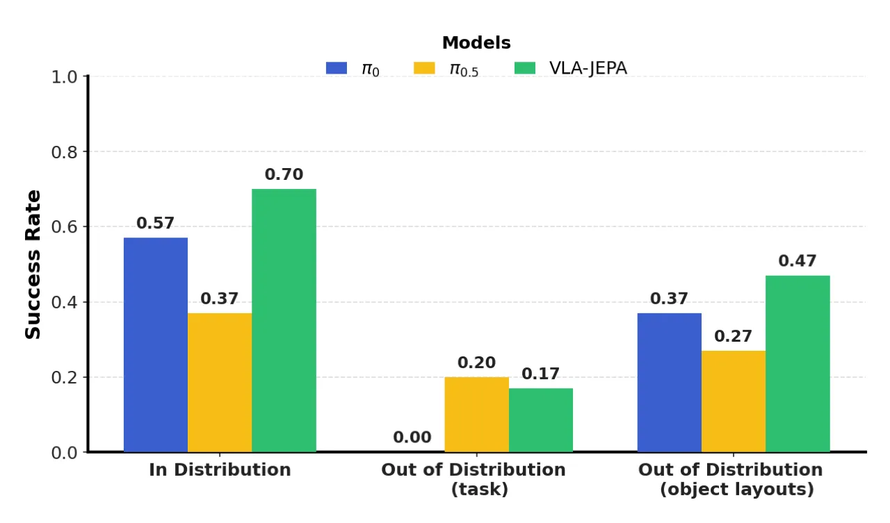
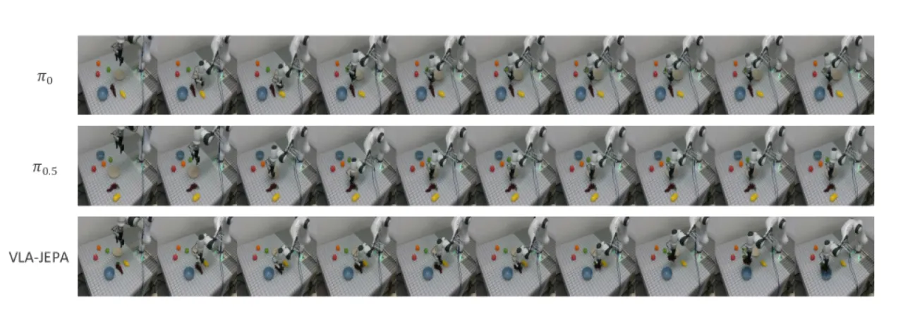
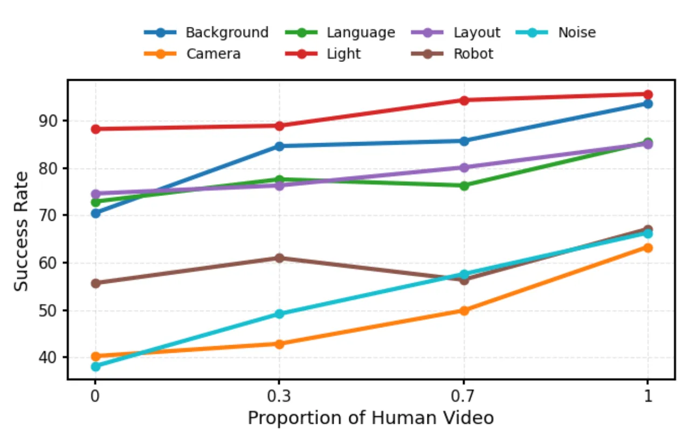

VLA-JEPA 提出了一种基于 JEPA（Joint Embedding Predictive Architecture）的潜空间世界模型预训练框架，专为视觉-语言-动作（VLA）策略设计。通过在隐空间而非像素空间中预测未来帧的表示，模型能够学到对相机运动、光照变化和背景干扰均鲁棒的动态抽象，在 LIBERO、SimplerEnv 及真实机器人实验上均达到业界领先性能。
现有基于潜在动作预测的 VLA 预训练方法（如 LAPA、UniVLA）将优化目标锁定在像素级变化上，而非真正与控制相关的状态转移。这使得模型对相机抖动、背景变化等无关干扰极为敏感，难以在真实环境中稳健泛化。
"For embodied control, we want a value-bearing latent state that discards nuisance appearance while preserving factors governing state evolution."

作者归纳了现有隐动作预训练的四类核心失效模式：
VLA-JEPA 采用两阶段流程：先以 JEPA 目标进行世界模型预训练，再对 action head 进行微调。骨干网络使用 Qwen3-VL，视频编码采用 V-JEPA2 encoder，动作生成采用 flow matching。整体设计无需像素重建，无需复杂的多阶段解码器。

核心创新：Target encoder 处理未来帧，而 student 网络（VLM）仅能看到当前观测。模型在隐空间对齐预测表示与目标表示：
ℒ_WM = Σ(k=1 to T) 𝔼[||ŝ_tk − s_tk||²]
其中 ŝ_tk 为预测的世界状态，s_tk 为 target encoder 产生的目标表示。通过在隐空间而非像素空间预测，模型天然过滤了像素级的无关变化（光照、背景、相机运动），专注于语义状态转移。
动作生成采用 flow matching 对连续轨迹分布建模：
ℒ_FM = 𝔼[||v_θ(a_t,t|z_a) − (a₀:H − ε)||₂²]
综合训练目标为：ℒ = ℒ_FM + β·ℒ_WM，β 为超参数权衡世界模型损失与动作预测损失。

框架支持无缝整合无动作标注的人类视频与有标注机器人数据。人类视频只需 world modeling loss，不需要动作标签。实验表明，人类视频主要强化"模型已有技能的鲁棒性和稳定性"，而非引入全新的动作动力学。
在 LIBERO（4个任务套件）、LIBERO-Plus（7种扰动维度）、SimplerEnv（Google Robot + WidowX）和真实 Franka 机器人上进行评估，与 OpenVLA-OFT、π₀、π₀.₅、UniVLA、GR00T N1 等方法对比。
| 方法 | Spatial | Object | Goal | LIBERO-10 | Avg |
|---|---|---|---|---|---|
| LAPA | 73.8 | 74.6 | 58.8 | 55.4 | 65.7 |
| UniVLA | 96.5 | 96.8 | 95.6 | 92.0 | 95.2 |
| OpenVLA-OFT | 97.6 | 98.4 | 97.9 | 94.5 | 97.1 |
| π₀ | 96.8 | 98.8 | 95.8 | 85.2 | 94.2 |
| π₀-Fast | 96.4 | 96.8 | 88.6 | 60.2 | 85.5 |
| π₀.₅ | 98.8 | 98.2 | 98.0 | 92.4 | 96.9 |
| GR00T N1 | 94.4 | 97.6 | 93.0 | 90.6 | 93.9 |
| WorldVLA | 87.6 | 96.2 | 83.4 | 60.0 | 81.8 |
| VLA-JEPA | 96.2 | 99.6 | 97.2 | 95.8 | 97.2 |
| VLA-JEPA w/o human videos | 94.8 | 99.6 | 95.8 | 94.0 | 96.1 |
LIBERO-Plus 在 7 个扰动维度（相机、机器人、语言、光照、背景、噪声、布局）上评估策略鲁棒性。VLA-JEPA 在 7 项中 5 项最优：
| 方法 | Camera | Robot | Language | Light | Background | Noise | Layout | Avg |
|---|---|---|---|---|---|---|---|---|
| UniVLA | 1.8 | 46.2 | 69.6 | 69.0 | 81.0 | 21.2 | 31.9 | 42.9 |
| OpenVLA-OFT | 56.4 | 31.9 | 79.5 | 88.7 | 93.3 | 75.8 | 74.2 | 69.6 |
| π₀ | 13.8 | 6.0 | 58.8 | 85.0 | 81.4 | 79.0 | 68.9 | 53.6 |
| π₀-Fast | 65.1 | 21.6 | 61.0 | 73.2 | 73.2 | 74.4 | 68.8 | 61.6 |
| WorldVLA | 0.1 | 27.9 | 41.6 | 43.7 | 17.1 | 10.9 | 38.0 | 25.0 |
| VLA-JEPA | 63.3 | 67.1 | 85.4 | 95.6 | 93.6 | 66.3 | 85.1 | 79.5 |
| 方法 | Pick | Move | Drawer | Place | Avg |
|---|---|---|---|---|---|
| RoboVLMs | 77.3 | 61.7 | 43.5 | 24.1 | 51.7 |
| villa-x | 81.7 | 55.4 | 38.4 | 4.2 | 44.9 |
| GR00T N1 | 0.7 | 1.9 | 2.9 | 0.0 | 1.4 |
| VLA-JEPA | 88.3 | 64.1 | 51.3 | 49.1 | 65.2 |
| 方法 | Spoon | Carrot | Block | Eggplant | Avg |
|---|---|---|---|---|---|
| LAPA | 70.8 | 45.8 | 54.2 | 58.3 | 57.3 |
| UniVLA | — | — | — | — | 42.7 |
| OpenVLA-OFT | 34.2 | 30.0 | 30.0 | 72.5 | 41.8 |
| VLA-JEPA | 75.0 | 70.8 | 12.5 | 70.8 | 57.3 |

视频时间窗口（video horizon）消融（Table 4）：T=4 帧时信息不足（avg 94.8%），T=16 帧时引入冗余信息（avg 95.5%），T=8 帧取得最优（avg 96.1%）。注意力可视化（Figure 6）显示：LAPA 呈现"excessively dense visual information"，UniVLA 过度关注背景元素，而 VLA-JEPA "focus[ed] more precisely on the operation, for instance, the robotic arm, the hand, and the objects"。


论文明确指出："the generalization capability of VLA-JEPA is less robust than π₀.₅, yet it produces more stable trajectories." 在真实任务 OOD 场景中，π₀.₅ 能更准确地跟随指令定位目标，而 VLA-JEPA "is prone to grasping objects that do not align with the command"，存在指令遵循精度不足的问题。
实验分析显示，人类视频数据主要增强已有技能的鲁棒性，"而非教会模型新的操作动力学"。如何让大规模人类视频真正迁移新的操作能力，仍是开放问题。
LIBERO-Plus 的 Camera 扰动维度上，VLA-JEPA（63.3%）优于 π₀（13.8%）但仍落后于 π₀-Fast（65.1%），表明对剧烈相机运动的鲁棒性仍有提升空间。这是从 Table 3 数据推断得出，并非作者明确声明。
方法基于 Qwen3-VL + V-JEPA2 encoder，推理成本较高。论文未讨论模型压缩或小模型迁移方案。轻量化部署能力尚未验证。